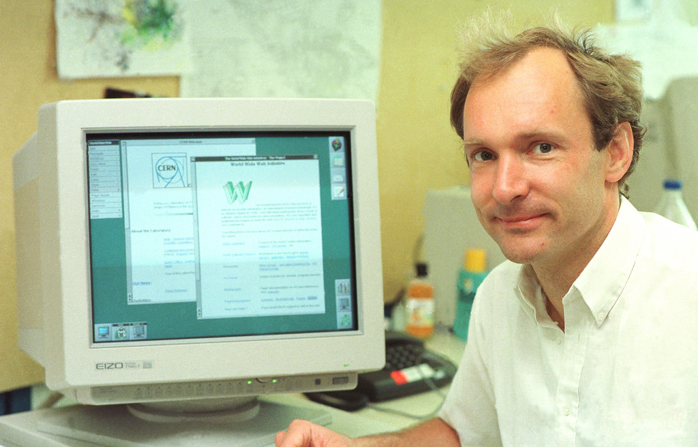

A História da Internet: Do Silêncio ao Sinal
Como a rede que começou com cientistas virou parte essencial da nossa vida
Em 1989, o cientista britânico Tim Berners-Lee criou o conceito da World Wide Web. A ideia era simples: conectar documentos e pessoas por meio de uma grande rede. Mas o impacto disso foi tudo, menos simples. Antes disso, a internet era fechada, usada por militares e universidades — sem interface amigável, sem navegação.

Antes da internet, o silêncio digital
Antes da chegada da web, o acesso à informação era totalmente offline. Bibliotecas, livros, jornais — tudo era físico. A comunicação, também limitada, era feita por carta ou telefone. Um mundo sem e-mail, sem redes sociais, sem Google.
O surgimento da ARPANET nos anos 60 iniciou o conceito de rede, mas foi a proposta de Berners-Lee que deu forma à internet como conhecemos. A primeira página da web foi ao ar em 1991 — simples, sem design, mas revolucionária.
- A informação passou a ser instantânea
- A comunicação ficou global
- Nasceram novas formas de aprender
- A cultura digital começou a se formar
- O mundo nunca mais foi o mesmo
Do sinal ao impacto no presente
Hoje, a internet é parte do nosso dia a dia. Estudamos, compramos, trabalhamos e nos conectamos por ela. Durante a pandemia, se tornou essencial: lives, aulas online, videochamadas. A vida migrou pra rede.

Mas com tudo isso veio também o excesso: ansiedade, fake news, dependência digital. A internet trouxe o mundo pra perto, mas também deixou a mente sobrecarregada.
Quer saber mais?
A internet mudou o mundo, e ainda está mudando. A cada ano, novas tecnologias surgem, novas formas de conexão aparecem, e a gente continua aprendendo a viver nesse mundo digital.
Com tanta transformação acontecendo, é importante entender os marcos dessa história pra pensar no futuro da internet.
- Tim Berners-Lee criou a Web, mas não controla o que ela virou
- O tráfego de dados dobra a cada poucos anos
- 5 bilhões de pessoas estão conectadas hoje
- A web evoluiu de texto para inteligência artificial
- A internet molda cultura, política e até nossa saúde mental